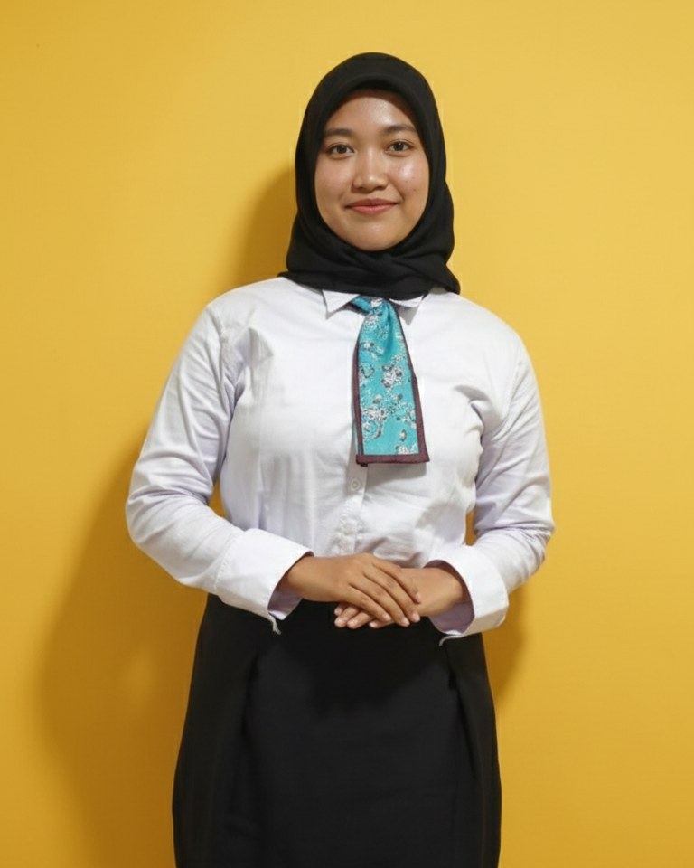

Getting Started with Cisco Packet Tracer
Cisco Networking Academy, offered by Universitas Airlangga
19 Feb 2026
View certificateAdaptable, organized and happiest when a messy plan turns into something that works.

I'm Zahra, an Information Systems student at Universitas Airlangga in Surabaya. I work comfortably in fast-paced teams and with people from very different backgrounds, which has made me a better listener and a clearer communicator.
I manage my own time, prioritize tasks and keep learning new skills. On campus I have led sponsorship teams, coordinated marketing, represented my organization to external partners and moderated a national event's talk show.
On the technical side I build web and mobile apps, and I document systems with BPMN, UML and DFD so that teams share one picture of what they are building.
Airlangga University
2024 to now
76 High School of Jakarta
2021 to 2024
Organizations and events I have helped run, newest first.
2026
Pointer (new student orientation, study program)
2026
Sci Fest 2026
November 2025
Airlangga Convention 3.0
October to November 2025
Reformafest 2025 (National Debate Competition)
February to December 2025
HIMSI (Himpunan Mahasiswa Sistem Informasi)
February to December 2025
HIMSI (Himpunan Mahasiswa Sistem Informasi)
Courses and credentials I have completed.
Cisco Networking Academy, offered by Universitas Airlangga
19 Feb 2026
View certificate